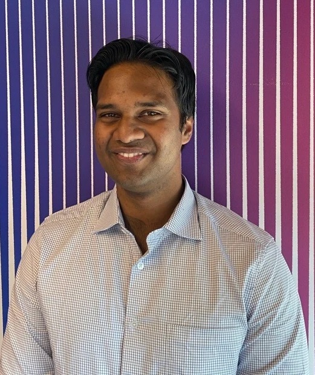

Multi-agent systems
Orchestrators that decompose a request, delegate to specialized tool-using agents, and consolidate grounded answers, taken from prototype to customer pilots.
LangGraph · Bedrock AgentCore · MCP · A2A
Senior Data Scientist · Applied AI Engineer
I take LLM and multi-agent systems from prototype to production, working with customers and business teams to turn messy, real-world problems into deployed AI.

I'm a Senior Data Scientist in Chicago, building generative AI for the insurance industry. My work spans the whole lifecycle: scoping problems with stakeholders, designing agentic and retrieval-grounded systems, standing up the inference infrastructure they run on, and measuring whether they actually work with rigorous evaluation.
Recently I've led customer pilots of a multi-agent claims application with insurance carriers, built a shared LLM inference platform used by multiple product teams, and launched an internal AI coding-assistant platform for 150+ engineers. Before that I shipped computer vision and sensor ML models that run at scale in production.
I hold an M.S. in Computer Science from Arizona State University, where I did NLP research.
CCC Intelligent Solutions · Chicago, IL
CCC Intelligent Solutions · Chicago, IL
CCC Intelligent Solutions · Chicago, IL
Orchestrators that decompose a request, delegate to specialized tool-using agents, and consolidate grounded answers, taken from prototype to customer pilots.
LangGraph · Bedrock AgentCore · MCP · A2A
End-to-end pipelines from OCR to cited answers over long, messy documents, built with domain experts so the output is trusted in real workflows.
OCR · Vector databases · Embeddings · Citations
Shared, isolated model serving for multiple teams with clear SLOs and observability, so product teams can ship without fighting over GPUs.
vLLM · Kubernetes · Prometheus · Grafana
Eval suites for prompts, models, and agents that gate releases, plus guardrails for prompt injection and PII and human-in-the-loop review.
LLM-as-judge · Regression evals · HITL
Systems that link evidence across video, speech, and text, plus production computer vision models running on millions of images.
ViT · Diarization · PyTorch
An internal coding-agent platform on self-hosted models, rolled out to 150+ engineers with tests and evals as release gates.
Qwen Code · Self-hosted LLMs